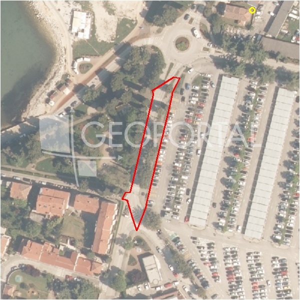

#37250 · POREČ, PRODAJE SE GRAĐEVINSKO ZEMLJIŠTE S GRAĐEVINSKOM DOZVOLOM ZA VIL
Žbandaj, Poreč, Istarska · zemljiste · njuskalo · status active · oglas ↗
Ocjena
- Score
- 55 rule 55 · LLM – · 12.09.2026.
- RLV
- 269.000 € (229 €/m²) · ratio 1,45
- Ukupna investicija
- 2,51 M€
- GBP
- 940 m²
- Feedback
- –
- CRM
- –
Oglas
- Cijena
- 185.000 € (174 €/m²)
- Površina
- 1.065 m² · DKP 1.175 m² (odstupanje 10,4 %)
- Prodavatelj
- agencija · Century 21 Futura
- Prvi put
- 11.09.2026. · zadnje 11.09.2026. · 0 d na tržištu
Povijest cijene
| Datum | Cijena |
|---|---|
| 11.09.2026. | 185.000 € |
Flagovi
zop_70_100 ZOP pojas 70/100 m (−10)zone_uncertainty zona nije pregledana (reviewed: false) (−5)
llm_pending LLM ekstrakcija/ocjena nedostupna
Komponente score-a
| rlv | {'gbp': 940.3360000000001, 'kis': 0.8, 'nkp': 705.2520000000001, 'noi': None, 'rlv': 268762.3382608698, 'ratio': 1.4527693960047015, 'value': None, 'phases': 1, 'profile': 'obala_visestambeno', 'gdv_neto': 3103108.8000000003, 'cost_soft': 94033.60000000002, 'gdv_bruto': 3878886.0000000005, 'kis_known': False, 'total_inv': 2509326.56, 'cost_build': 1880672.0000000002, 'cost_other': 338520.9600000001, 'cost_sales': 116366.58000000002, 'demolition': False, 'gbp_source': 'kis', 'rlv_per_m2': 228.65217391304364, 'parcel_area': 1175.42, 'parcelation': False, 'roi_on_cost': 0.1902564885775568, 'profit_at_ask': 477415.6599999999, 'cost_demolition': 0.0, 'total_inv_phase': 2509326.56, 'parcel_area_effective': 1175.42, 'sale_price_per_m2_nkp': 5500.0} |
| hard | [] |
| info | ['llm_pending'] |
| rubric | {'permits': {'max': 5.0, 'detail': {'permit': 'gradjevinska'}, 'points': 5.0}, 'location': {'max': 15.0, 'detail': {'source': 'rlv.yaml:istra_zapad/row2', 'sale_price_per_m2_nkp': 5500.0}, 'points': 11.5}, 'physical': {'max': 4.0, 'detail': {'slope_pct': 6.0, 'slope_points': 2.0}, 'points': 2.0}, 'liquidity': {'max': 3.0, 'detail': {'n_cuts': 0, 'points_cut': 0.0, 'points_days': 0.008333333333333333, 'seller_type': 'agencija', 'points_fresh': 0.5, 'price_cut_pct': None, 'days_on_market': 1, 'points_private': 0}, 'points': 0.51}, 'rlv_ratio': {'max': 25.0, 'detail': {'rlv': 268762, 'ratio': 1.453, 'asking_price': 185000.0}, 'points': 24.06}, 'ticket_fit': {'max': 10.0, 'detail': {'asking_price': 185000.0}, 'points': 4.93}, 'zone_quality': {'max': 8.0, 'detail': {'reason': 'zona nepoznata', 'source': 'nepoznato', 'zone_class': None}, 'points': 2.0}, 'profit_potential': {'max': 20.0, 'detail': {'roi_on_cost': 0.19, 'profit_at_ask': 477416}, 'points': 15.46}, 'price_vs_benchmark': {'max': 10.0, 'detail': {'source': 'auto:Poreč', 'deviation': 0.001, 'ask_eur_m2': 174, 'benchmark_eur_m2': 173.89}, 'points': 5.02}} |
| weights | {'llm': 0.4, 'rule': 0.6, 'model': 0.0} |
| penalties | {'zop_70_100': 10, 'zone_uncertainty': 5} |
| raw_score | 70,5 |
| rlv_notes | [] |
| flag_notes | {'max_gbp': 940, 'zop_band': '70', 'total_inv': 2509327, 'zone_code': None, 'zone_class': None, 'zone_source': 'nepoznato', 'zone_reviewed': None} |
| caps_applied | [] |
GIS
- Čestica
- k.o. 323748, k.č. 3902 (pin_buffer, 0,75); k.o. 323748, k.č. 3885 (pin_buffer, 0,70); k.o. 323748, k.č. 3870/2 (pin_buffer, 0,69)
- Zona
- – (–)
- kig / kis / katnost
- – / – / –
- GP / UPU
- – · UPU –
- Pristup / nagib
- unknown · 6,0 % (max 9,3 %)
- More
- 47 m · red 2 · ZOP 70
- Zaštite
- Natura ne · zaštićeno ne · kulturno dobro ne
- Zgrade na čestici
- 0 %
- Match
- 0,75
Karta
Ortofoto (DOF)

RLV kalkulacija — pretpostavke
| gbp | {'value': 940.3360000000001, 'source': 'kis'} |
| kis | {'value': 0.8, 'source': 'default_profila'} |
| sea_row | {'value': '2', 'source': 'gis'} |
| soft_pct | {'value': 0.05, 'source': 'profil'} |
| nkp_ratio | {'value': 0.75, 'source': 'profil'} |
| cost_other | {'value': 338520.9600000001, 'source': 'profil: doprinosi+uređenje po m² GBP, financiranje+rezerva % gradnje'} |
| parcel_area | {'value': 1175.42, 'source': 'dkp'} |
| asking_price | {'value': 185000.0, 'source': 'oglas'} |
| margin_on_cost | {'value': 0.15, 'source': 'profil'} |
| build_cost_per_m2_gbp | {'value': 2000.0, 'source': 'profil'} |
| sale_price_per_m2_nkp | {'value': 5500.0, 'source': 'rlv.yaml:istra_zapad/row2'} |
| transfer_tax_and_acquisition | {'value': 0.06, 'source': 'profil'} |
Ekstrakcija iz oglasa
| permit | gradjevinska |
| permit_content | VILU S BAZENOM |
| existing_building_m2 | 300.0 |
Benchmarks mikrolokacije
| Vrsta | Vrijednost | n | Od | Izvor |
|---|---|---|---|---|
| land_ask_eur_m2 | 174 | 302 | 11.09.2026. | auto |
| newbuild_sale_eur_m2_nkp | 3.695 | 8 | 11.09.2026. | auto |
Opis oglasa
POREČ, PRODAJE SE GRAĐEVINSKO ZEMLJIŠTE S GRAĐEVINSKOM DOZVOLOM ZA VILU S BAZENOM U mirnom selu, samo 15 minuta vožnje od predivnih plaža, nalazi se lijepo građevinsko zemljište s građevinskom dozvolom. Građevinska dozvola za kuću od 300 m2 ali može se prenamijeniti u zgradu od 6 stanova ili nekoliko stambenih jedinica. Odlična prilika za investiciju! Za sve informacije nazvati na broj 0038598592589